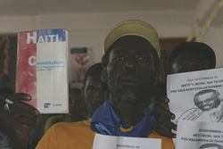

Boletín de la Comisión de Solidaridad Internacional, Número 2
Submitted on Wed, 05/28/2008 - 4:12pm

Saludos de la Comisión de Solidaridad Internacional (ISC) de los Trabajadores Industriales del Mundo (IWW) y bienvenidos a nuestro segundo boletín mensual internacional.
El propósito de este boletín es informar a nuestros aliados alrededor del mundo de nuestras actividades, campañas solidarias e información relevante de luchas laborales internacionales. Esperamos que este boletín contribuya a la construcción de la solidaridad entre trabajadores con comunicaciones fortalecidas e intercambios de información.
Para contribuir ideas o noticias al boletín, o contactarse con la ISC por favor dirigirse a solidarity@iww.org. Para la versión en español, hacer clic aquí
En esta edición:
1. Acciones y Eventos de la CSI
2. Noticias del IWW
3. Campañas Solidarias y Comunicados
-----------------------------------------------------------------------------------------------------
1. Acciones y Eventos de la CSI
Delegados de la CSI regresan de Haití
Los cuatro delegados de la CSI regresaron el 5 de mayo después de dos semanas en Haití, donde estuvieron como delegación de solidaridad del IWW. Durante su viaje lograron diseminar información sobre la grave situación de nuestros compañeros trabajadores en Haití, utilizando una variedad de media, incluyendo un artículo sobre el viaje en el periódico mensual del IWW, el Industrial Worker, un artículo más largo que será publicado en Z Magazine, y un documental que está siendo producido por la cineasta y miembro del IWW, Diane Krauthamer. El blog de la delegación, que incluye informes y fotos de cada día del viaje, se encuentra en: http://iwwinhaiti.blogspot.com.
La CSI prepara una delegación sindical a Japón
La CSI ha autorizado a una delegación de tres trabajadores a viajar a Japón a fines de mayo y principios de junio. La delegación fue invitada por la Coalición de Acción contra el G8 y el Sindicato Freeters (All Freeters Union), una organización de trabajadores precarizados con la cual hemos estado en contacto por los últimos meses. La delegación coincide con manifestaciones y conferencias contra la cumbre del Grupo de Ocho (G8), una reunión de las ocho naciones más ricas y poderosas del planeta. El IWW y otras organizaciones laborales militantes formarán parte de un contingente internacional de trabajo durante el Cumbre del G8.
2. Noticias del IWW
Camioneros a través del EE.UU. se manifiestan contra precios ascendientes del petróleo
Camioneros a través del EE.UU. participaron en dispersas acciones masivas entre el 1 de abril y el 5 de mayo, impulsados principalmente por los ascendientes costos de petróleo. Un artículo en el Industrial Worker declaró que a través de los EE.UU., el precio del diesel ha aumentado 21% desde fines de diciembre del 2007, de US$3.35 a US$4.05 por galón, según la Administración Estadounidense de Información de Energía. Un mes antes de la invasión de Irak en marzo de 2003, el precio del diesel fue US$1.71 por galón. El peso de los ascendientes costos de petróleo cae sobre los camioneros mismos en vez de caer en las empresas de transporte o en los grandes intereses económicos que dependen de este sector. Miembros del IWW dieron discursos en algunas de las manifestaciones masivas, donde fueron bien recibidos, y prometieron asistencia para acciones en el futuro.
El IWW de Leicester (Reino Unido) campaña contra la corporatización de la educación de adultos
La sucursal de trabajo del IWW en el Colegio de Educación para Adultos en Leicester ha comenzado a tomar acción contra un obvio intento de intereses creados en la ciudad por transformar el centro de educación para adultos en un centro de formación para trabajadores de centros comerciales. Como Leicester está bajo el promedio nacional de empleo, el gobierno municipal ha formado una alianza con un centro comercial grande y una corporación de desarrollo de propiedad para intentar cambiar esta tendencia. La meta es reducir el índice de desempleo contratando en particular a grupos dentro del sector de ventas. Para lograr esta meta, se estableció un centro de empleo dentro del centro comercial, pero lo mudaron al Colegio de Educación para Adultos, un espacio que opera con fondos públicos, donde actualmente el centro de empleo funciona sin pagar alquiler. Esta mudanza desplazó uno de los talleres de arte, cuyos trabajadores no fueron consultados de antemano y sólo fueron notificados dos días antes de la mudanza. Miembros del IWW demandan que el taller de arte sea restaurado a su sede anterior y que todos los cursos de educación para adultos continúen en el centro. Para más detalles ver http://www.geocities.com/savelaec/
3. Declaraciones de Solidaridad
En solidaridad con Dave Kerin y Union Solidarity
La ISC escribió un estamento en apoyo del organizador sindical australiano, Dave Kerin, coordinador de la coalición de Union Solidarity. El lugar de trabajo australiano Ombudsman, ha mandado a Kerin una “noticia para producir documentos” en relación al reciento paro en Boeing. Si el se rehúsa a darle al gobierno información que pretenden usar en contra de Union Solidarity y de otros miembros sindicales hasta el 8 de mayo, el enfrenta hasta seis meses de prisión. La ISC pide solidaridad con Dave Kerin y Union Solidarity, mientras demandaban que el gobierno australiano pone fin a este acoso legal.
Solidaridad con los trabajadores Iraníes de neumáticos
La ISC escribo una carta al gobierno de Irán expresando su rabia por el arresto y la golpiza de cientos de trabajadores de la compañía manufacturera de neumáticos Alborz, cerca de Tehran el 12 abril, 2008. Los trabajadores estuvieron protestando por cinco meses por salarios impagos. Como una de las condiciones para soltar a los trabajadores, estos fueron forzados a firmar cartas garantizando que no protestarían otra vez. La ISC condena esta gran violación de derechos humanos básicos. La ISC declaró su apoyo a los trabajadores y condenó que el gobierno de Irán liberara a todos los trabajadores que permanecían detenidos inmediatamente y retirara las condiciones puestas sobre los trabajadores ya liberados. La ISC también insistió en que la compañía manufacturera de neumáticos Alborz y sus compañeros corporativos deben ser hechos responsables ante la violación de los derechos de sus trabajadores.
Pascua Lama: Barrick Gold en Chile
Fragmento de “Barrick rn Pascua Lama” por Javier Karmy
En Mayo del 2008, Barrick Gold celebra su aniversario numero 25. La compañía multinacional fundada en 1983 y dirigida por Peter Munk en Toronto, Ontario, Canada, a iniciado sus trabajos en el valle del Huasco, Atacama, Chile. Conflictos ambientales que se hicieron públicos contra el proyecto minero de Pascua Lama-Veladero en la frontera de Chile-Argentina causaron cambios en la planificación original que pretendía remover glaciares andinos para la extracción de oro y la compañía comenzó a promover “minería sustentable” desde que se activó en junio del 2006. Recientemente, en enero del 2008, Barrick recibió un premio de la Mutual de Seguridad, la agencia nacional en cargo de seguridad en el trabajo, por mil días sin accidentes laborales. Información pertinente a condiciones laborales poco seguras, incluyendo la muerte accidental de 15 trabajadores, no fue expuesta para no afectar mayormente la imagen de la corporación minera. El accidente más cercano ocurrió en febrero del 2008 cuando un helicóptero se desplomo sin mayor cobertura de los medios de noticias nacionales, aún cuando el ciudadano canadiense Derek Ilsks (32) falleció y el piloto chileno Osvald Carrasco (58) quedo gravemente herido. La Comisión de Solidaridad Internacional (USC) de la Industrial Obrera (IWW) apoya las demostraciones mundiales en contra de Barrick en mayo del 2008. Representantes de las comunidades indígenas afectadas de Wiradjuri Australia, Nevada USA, Papua New Guinea, y Huasco Chile están en un tour internacional en Canada ya que no habrá mayores cambios hasta que el gobierno canadiense reconozca regulaciones obligatorias, y no solamente voluntarias, para la minería.
Más información en www.protestbarrick.net, www.noapascualama.org